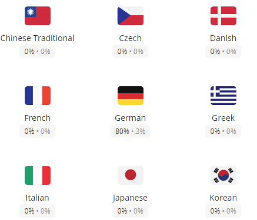
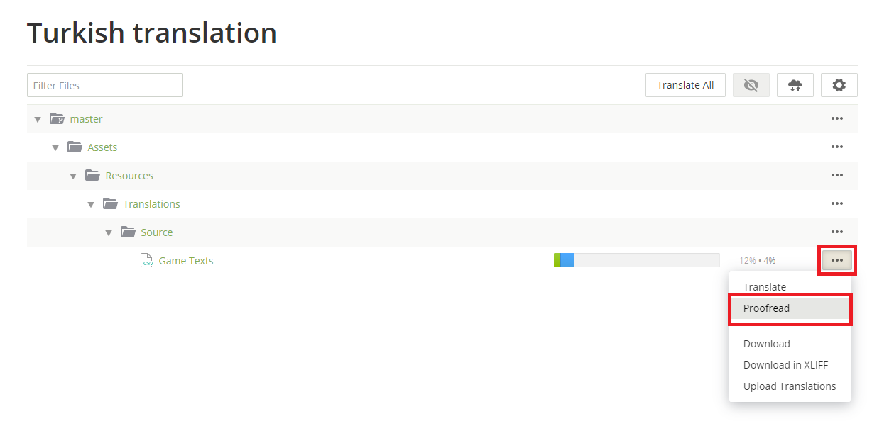
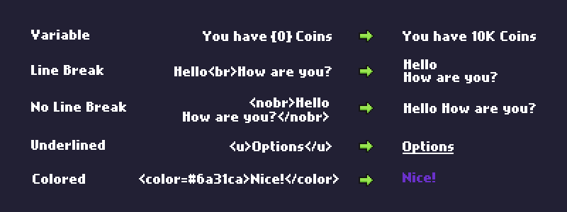

Getting Started for Proofreaders
A proofreader is a user that approves the translation of a String.
The 2 most important tasks are paying attention to consistency and avoiding duplicates.
For example if "Upgrade" has two or more possible translations/synonyms, please make sure you choose one and use it for every instance of the word "Upgrade".
For similar but different words the opposite is true. For example the material "Slime", the enemy "Jelly" and the minion "Goo Mutant" might translate to the same word at first glance. Please do your best to differentiate them and find synonyms.
If you want to become a proofreader for your language, please contact @Plab on Discord.
How to Proofread
Step 1: Open Crowdin
Step 2: Select your Language
Step 3: Select "Proofread"
Step 4: Start approving/commenting
On the left side you have all the words/sentences with their translations.
By clicking on the checkmark you can approve the translation if they're correct.
On the right side you can click the Messages icon to leave a comment if you have a problem with something.
Format
Icons
That's all!
If you have any questions, please feel free to ask them in the #translations-general channel on Idle Slayer's Discord.